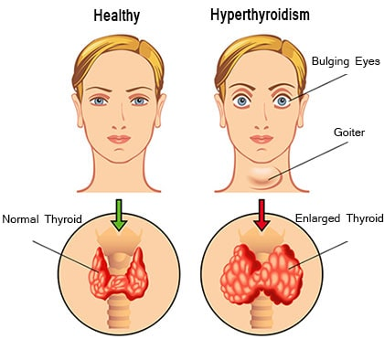

Hyperthyroidism

SYMPTOMS:
There are many symptoms of hyperthyroidism and they can impact your entire body. You may experience some of these symptoms and not others, or many of them at the same time. Symptoms of hyperthyroidism can include:
- Rapid heartbeat (palpitations).
-
Feeling shaky, nervous.
-
Weight loss.
-
Increased appetite.
-
Diarrhea and more frequent bowel movements.
-
Double vision.
-
Thin skin.
-
Menstrual changes.
-
Intolerance to heat and excessive sweating.
-
Sleep issues.
-
Swelling and enlargement of the neck from an enlarged thyroid gland (goiter).
-
Hair loss and change in hair texture (brittle).
-
Bulging of the eyes (seen with Graves’ disease).
-
Muscle weakness.
CAUSES
- Graves’ disease: In this disorder, your immune system attacks the thyroid. This makes the thyroid create too much thyroid hormone. Graves’ disease is a hereditary condition (passed down through a family). If a member of your family has Graves’ disease, there’s a chance others in the family could have it too. It’s more common in women than men. Graves’ disease is the most common cause of hyperthyroidism, making up about 85% of cases.
-
Thyroid nodules: A thyroid nodule is a lump or growth of cells in the thyroid gland. The nodule is able to produce more hormones than your body needs. Such nodules are rarely cancerous.
-
Thyroiditis: This is a general term that refers to swelling (inflammation) of your thyroid. This inflammation can be caused by an infection or a problem with your immune system. When the thyroid is inflamed, it can leak hormones, resulting in higher levels of hormones than your body needs. Thyroiditis can happen after the delivery of a baby (postpartum thyroiditis) or from taking drugs like interferon and amiodarone (a heart medication).
-
Iodine: If you consume too much iodine (through your diet or medications), it can actually cause your thyroid to produce more thyroid hormone. Iodine is a mineral that your thyroid uses to create thyroid hormone. Receiving intravenous iodinated contrast (iodine “dye”) may also cause hyperthyroidism.
DIAGNOSIS
- Physical Exam
During a physical exam, your healthcare provider will gently feel your neck to check the size of your thyroid gland. This is a simple and quick process that can be done in your provider’s office. The provider will also examine the eyes, the heart and the skin.
-
Blood Tests
Your healthcare provider may take a blood sample to look for high levels of thyroid hormone. This is called thyroid function testing. When you have hyperthyroidism, levels of the thyroid hormones T3 and T4 are above normal and thyroid stimulating hormone (TSH) is lower than normal.
-
Imaging Tests
Taking a look at the thyroid can help to diagnose hyperthyroidism and the possible cause (often Graves’ disease). Your provider could use a few tests to look at your thyroid. One test is called a thyroid scan and radioactive iodine uptake test. A thyroid scan uses small amounts of radioactive material to create images of your thyroid.
-
Another test is a thyroid ultrasound. An ultrasound is a non-invasive procedure that allows your provider to look at your thyroid on a screen. This test is used if your provider is looking for thyroid nodules.
-
Imaging tests allow your provider to get a sense of the size and shape of the thyroid, as well as if there are any thyroid nodules. The scan can tell your provider if the thyroid is overactive and making too much thyroid. Often, seeing an increased radioactive iodine uptake on this scan can help diagnose Graves’ disease. If the thyroid is inflamed (swollen), it could be thyroiditis. In this case, there will be no radioactive iodine uptake in the neck.
TREATMENT
- Anti-thyroid drugs methimazole (Tapazole) or propylthioracil (PTU): These drugs block the ability of the thyroid to make hormones. They offer rapid control of your thyroid.
-
Radioactive iodine: Radioactive iodine is taken by mouth and absorbed by the overactive thyroid cells. The radioactive iodine damages these cells, and causes your thyroid to shrink and thyroid hormone levels to go down over a few weeks. This usually leads to permanent destruction of the thyroid, which will cure hyperthyroidism. Most patients who receive this treatment have to take thyroid hormone drugs for the rest of their lives to maintain normal hormone levels.
-
Surgery: Your healthcare provider may remove the thyroid gland through surgery (thyroidectomy). This will correct your hyperthyroidism, but it will usually cause hypothyroidism (an underactive thyroid). Patients who have a thyroidectomy have to take thyroid supplements to keep hormone levels normal.
-
Beta blockers: These drugs block the action of thyroid hormones on the body. They do not change the amount of hormones in your blood, but they can help control symptoms like rapid heartbeat, nervousness, and shakiness that are caused by hyperthyroidism. This treatment isn’t used alone and is usually paired with another option to treat hyperthyroidism over the long-term.